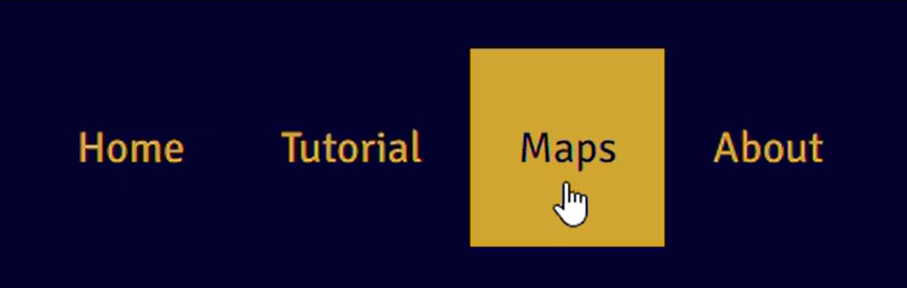
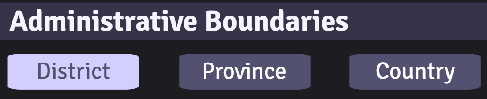
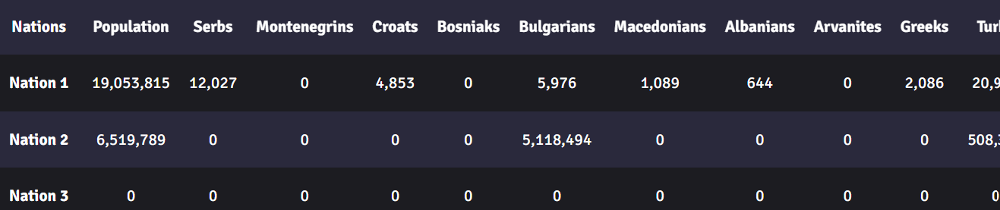

How to use Vatant

Click on the Maps button in the navigation bar to begin.

Select a region you would like to load from the menu.

To name your map, click on Map 1 and type a new name.
Map Tab

In Map Options:
Simply click on a district to add it to the nation selected.
If you made a mistake, click on the Erase button or the control key on your keyboard.To switch back to draw mode, click the Draw button or the shift key on your keyboard.
To look through the map without accidentally changing the map, click on the Browse button or the ` key on your keyboard.
To add multiple districts easily, hold down the shift key and hover over the districts you want to add.
To erase multiple districts easily, hold down the control key and hover over the districts you want to erase.
Select Province or Country to draw or erase by province and country rather than district.
To quickly switch between district, province, and country modes, click on the following buttons on your keyboard:
[ key for District mode, ] key for Province mode, \ key for Country mode.
Control the opacity of all selected districts through the scale in Map Options.
In Administrative Boundaries:
Click the District, Province, and Country buttons to turn these border layers on and off.

In Layer Options:
Click on the other layer options to show other demographic information, such as:
- largest ethno-linguistic group
- ethno-linguistic map of a single group
- largest religion
- religion map of a single group
- population density
Only one layer option can be selected at a time.
Control the opacity of the layer through the scale in Layer Options.
In Nations:

Rename any nation in the Nations section by clicking on the name and typing.
Once you are done creating a nation, click on the checkbox next to it to lock it in. Once it is clicked, it cannot be drawn over or erased.

To change the nation's color, right click on the circle and select a color.
Data Tab
Click on the Stats tab to see analytics of each nation.


The Statistics tab shows general information of all nations, such as area, density, population, largest group, and largest religion.
The Ethnic Data and Religion Data sections have three parts: Detailed, Groups, and Families.
- Clicking on Detailed provides the most detailed information there is, such as Sunni Arabs and Shia Arabs.
- Clicking on Groups combines similar groups into one, such as Serbs and Montenegrins into one category.
- Clicking on Families aggregates on a macro level, such as Turkic, Iranic, and Dravidian.
Note: Currently the Ethnic Data and Religion Data tabs do not update automatically, so the user has to manually switch to another tab and back to update it.
Note: The data is not 100% accurate due to many reasons: government manipulation of data, boycotting of censuses by minorities, and differences in categorization between nations may mean a group is considered seperately in one nation and in Others in the next.

To check out the sources and data accuracy of the data, click on the Data Sources button.
This tab lists the sources of the data and our ratings on how accurate the information is.
Note: This section lists based on data source, not by country. Breakaway regions/countries, like Abkhazia, Kosovo, and Northern Cyprus, collect data seperately and so are listed seperately.
Note: Since every nation tabulates data differently and the data comes from the best available source [sometimes non-government sources], the data should not be taken as 100% accurate but instead as an estimate based on the currently available data.
Save Tab

To save your work and come back later, click on the Save button in the Save tab to download the map data.
When you are ready to return to your map, click on Upload button and select the data file you want to continue working on.
The resulting map will combine the current map with the uploaded map, with the uploaded map overriding the current map if they both have the same district selected.
Happy mapping!